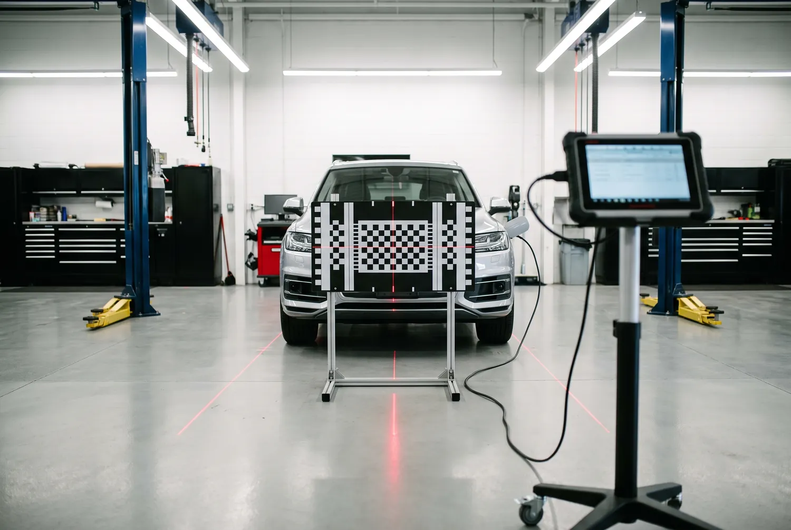

Static, dynamic or both — so lane-keep assist and automatic braking read the road correctly after new glass.
Call Now for a Free QuoteTell us the vehicle and the damage — we’ll come back the same working day.
Prefer to talk? Call (256) 699-0625

ADAS calibration is the step that makes your safety systems work again after the windshield comes out. If there is a camera mounted behind your glass, it feeds lane-keep assist, forward collision warning, automatic emergency braking, adaptive cruise control and traffic sign recognition. Move that camera a couple of millimetres and every one of those systems is aiming at the wrong place.
There are two methods, and the vehicle decides which one it needs.
Static calibration happens indoors in a level bay. Printed target boards go on stands at manufacturer-specified distances and heights in front of the car, the wheels are set straight, and a scan tool walks the camera through recognising those targets. It needs controlled lighting and a flat floor, which is why this is the one job we do not do in a driveway.
Dynamic calibration happens on the road. With a scan tool connected, the vehicle is driven at set speeds on clearly marked road for a set distance while the camera learns lane markings and traffic in real conditions.
Plenty of vehicles need both. Honda Sensing, Subaru EyeSight and several Mercedes systems commonly require a static procedure followed by a dynamic one before they will clear.
Because it has no way of knowing it moved. The camera reports what it sees and the vehicle trusts that data against a fixed reference set at the factory. Shift the mounting by a hair and the maths still runs perfectly — it is just now describing a road that is slightly to the left of the real one.
The failure mode is what makes this serious. An uncalibrated system does not usually throw a light and stop working. It keeps operating and quietly misjudges, which means automatic braking that reads distance wrong or lane-keep that nudges you toward a line that is not where it thinks. A shop quoting a very cheap windshield on a camera-equipped car is almost always leaving this out.
| Type | Typical cost | What it needs |
|---|---|---|
| Dynamic | $100 – $250 | Road drive at set speeds with a scan tool |
| Static | $150 – $300 | Level indoor bay, target boards, controlled light |
| Dual (both) | $250 – $600 | Static procedure followed by a road drive |
Bundled with a windshield replacement, the all-in total generally lands between $500 and $900 against $275 to $500 for the same glass on a car with no camera. The gap is the calibration, and it is not optional on a car that has the hardware.
The manufacturer decides, not the shop and not the customer. Broadly, many Toyota and Lexus systems are static; a number of Ford and GM systems clear dynamically; Honda, Subaru and several Mercedes platforms want both.
What you can reasonably ask any shop: which procedure your specific vehicle requires, whether they perform it in-house or sublet it, and whether you get documentation showing the calibration completed and passed. That last one matters if the car is ever in a collision afterwards.
Getting glass replaced at the same time? See windshield replacement for how the two jobs fit together.
No — only vehicles with a forward-facing camera mounted behind the glass. That is most cars built in the last several years and almost anything with lane-keep assist or adaptive cruise, but plenty of older vehicles have no camera and need nothing. We confirm from the year, make and model before quoting.
The driver-assist systems keep running on bad reference data. They usually do not shut off or warn you, which is the dangerous part: automatic emergency braking may judge distance incorrectly and lane-keep may steer toward a line that is not where the camera thinks it is.
One to three hours depending on type. A dynamic calibration is a road drive of a set distance at set speeds. A static procedure takes longer because the targets have to be positioned precisely. Dual calibrations run the longest since both have to complete and pass.
A dynamic calibration, yes — it is a road drive. A static calibration, no. It needs a level floor, measured target placement and controlled lighting, so that one is booked into an indoor bay. If your vehicle needs both, we handle the static portion there and the dynamic on the way.
Most jobs are done in your driveway or the work parking lot. Tell us the vehicle and the damage and we’ll quote it on the spot.